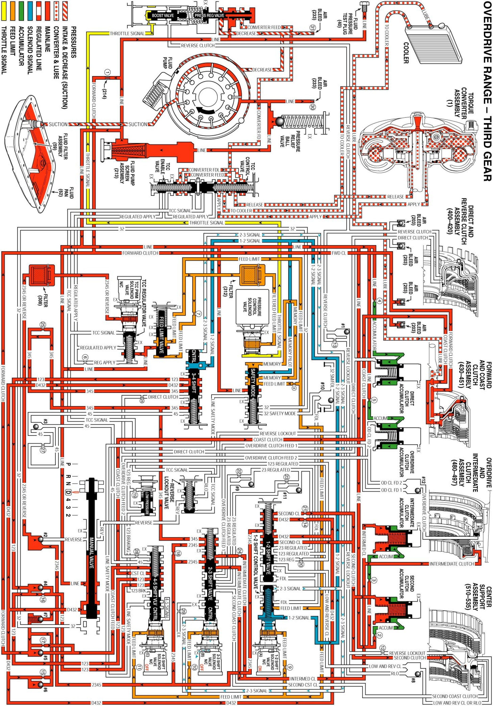

Overdrive Range, Third Gear
Overdrive Range, Third Gear
As vehicle speed increases, the TCM receives input signals from both speed sensors, the TP sensor and other vehicle sensors to determine the precise moment to de-energize or "turn OFF" the 2-3 shift solenoid (SS) valve. The 2-3 solenoid is OFF when the TCM removes the path to ground for that electrical circuit. This allows 2-3 signal fluid to exhaust at the 2-3 SS valve.
Intermediate Clutch Applies
2-3 Shift Solenoid (SS) Valve
- The 2-3 SS valve is de-energized, blocking feed limit fluid from entering the 2-3 signal fluid circuit. 2-3 signal fluid pressure exhausts through the 2-3 SS valve and 2-3 shift valve spring (372) force moves the 2-3 shift valve (371) to the released position.
2-3 Shift Valve
- 2345 fluid is routed through the 2-3 shift valve and enters the intermediate clutch circuit.
Intermediate Clutch
- Intermediate clutch fluid is directed to the intermediate clutch piston to apply the intermediate clutch plates and achieve Third gear.
Shift Accumulation
Intermediate Clutch Accumulator
- Intermediate clutch fluid is also sent to the intermediate clutch accumulator assembly. Intermediate clutch fluid, together with accumulator spring force, moves the intermediate clutch accumulator piston against accumulator fluid pressure to cushion the apply of the intermediate clutch.
Torque Converter Clutch Released
TCC PWM Solenoid Valve
- Filtered 2345 or reverse fluid is still available at the TCC PWM solenoid valve. However, depending on the shift pattern, the TCM keeps the pulse width modulated (PWM) solenoid de-energized blocking filtered 2345 or reverse fluid from entering the TCC signal fluid circuit, thereby keeping the torque converter clutch released.
Fluid Pressure Directed in Preparation for a Shift to Fourth Gear
2-3 Shift Valve
- 2345 fluid is routed through the 2-3 shift valve (371) into the 345 fluid circuit.
X-4 Ball Check Valve
- 345 fluid is routed through the X-4 ball check valve pocket. In some transmisssion models there is a ball check valve present which would force 345 fluid through orifice #25.
3-4 Shift Valve
- 345 fluid is routed to the 3-4 shift valve (345) where it is blocked by the valve in preparation for an upshift to fourth gear.
Overdrive Range, Third Gear - Torque Converter Clutch (TCC) Applied
Overdrive Range, Third Gear - Torque Converter Clutch (TCC) Applied:
